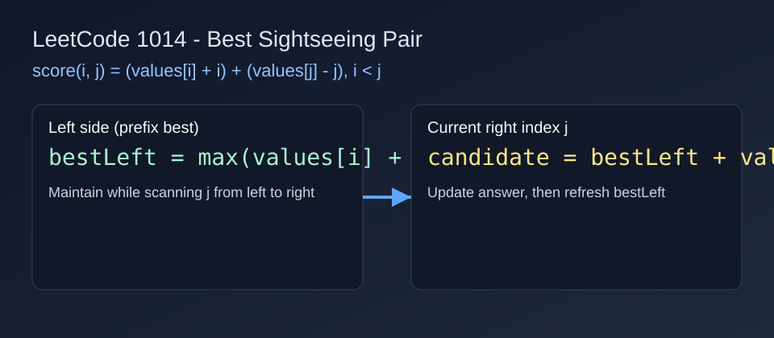

LeetCode 1014: Best Sightseeing Pair (Prefix Best of values[i] + i)
LeetCode 1014ArrayGreedyToday we solve LeetCode 1014 - Best Sightseeing Pair.
Source: https://leetcode.com/problems/best-sightseeing-pair/

English
Problem Summary
Given an array values, choose two indices i < j to maximize values[i] + values[j] + i - j. Return that maximum score.
Key Insight
Rewrite the formula as (values[i] + i) + (values[j] - j). While scanning j from left to right, we only need the best historical values[i] + i on the left. So we keep a running maximum and update answer in O(1) each step.
Algorithm
- Initialize bestLeft = values[0] + 0 and ans = -inf.
- For each j from 1 to n-1:
1) Try pair score: bestLeft + values[j] - j and update ans.
2) Update bestLeft = max(bestLeft, values[j] + j).
- Return ans.
Complexity Analysis
Time: O(n).
Space: O(1).
Common Pitfalls
- Updating bestLeft before computing current j score (would allow i = j).
- Forgetting the -j part in the right contribution.
- Using brute force O(n^2) on large inputs.
Reference Implementations (Java / Go / C++ / Python / JavaScript)
class Solution {
public int maxScoreSightseeingPair(int[] values) {
int bestLeft = values[0];
int ans = Integer.MIN_VALUE;
for (int j = 1; j < values.length; j++) {
ans = Math.max(ans, bestLeft + values[j] - j);
bestLeft = Math.max(bestLeft, values[j] + j);
}
return ans;
}
}func maxScoreSightseeingPair(values []int) int {
bestLeft := values[0]
ans := -1 << 60
for j := 1; j < len(values); j++ {
score := bestLeft + values[j] - j
if score > ans {
ans = score
}
candidate := values[j] + j
if candidate > bestLeft {
bestLeft = candidate
}
}
return ans
}class Solution {
public:
int maxScoreSightseeingPair(vector<int>& values) {
int bestLeft = values[0];
int ans = INT_MIN;
for (int j = 1; j < (int)values.size(); ++j) {
ans = max(ans, bestLeft + values[j] - j);
bestLeft = max(bestLeft, values[j] + j);
}
return ans;
}
};class Solution:
def maxScoreSightseeingPair(self, values: List[int]) -> int:
best_left = values[0]
ans = -10**18
for j in range(1, len(values)):
ans = max(ans, best_left + values[j] - j)
best_left = max(best_left, values[j] + j)
return ansvar maxScoreSightseeingPair = function(values) {
let bestLeft = values[0];
let ans = -Infinity;
for (let j = 1; j < values.length; j++) {
ans = Math.max(ans, bestLeft + values[j] - j);
bestLeft = Math.max(bestLeft, values[j] + j);
}
return ans;
};中文
题目概述
给定数组 values，选择两个下标 i < j，使得分数 values[i] + values[j] + i - j 最大，返回该最大值。
核心思路
将公式拆成 (values[i] + i) + (values[j] - j)。当我们从左到右枚举 j 时，只需要知道左侧最优的 values[i] + i。因此可以维护一个前缀最大值，做到每个位置 O(1) 更新答案。
算法步骤
- 初始化 bestLeft = values[0] + 0，ans = -inf。
- 从 j = 1 扫描到 n-1：
1) 计算当前配对得分 bestLeft + values[j] - j 并更新 ans。
2) 用 values[j] + j 更新 bestLeft。
- 扫描结束后返回 ans。
复杂度分析
时间复杂度：O(n)。
空间复杂度：O(1)。
常见陷阱
- 先更新 bestLeft 再算当前 j，会错误地让 i = j。
- 漏掉右侧项中的 -j。
- 直接双重循环导致 O(n^2) 超时。
多语言参考实现（Java / Go / C++ / Python / JavaScript）
class Solution {
public int maxScoreSightseeingPair(int[] values) {
int bestLeft = values[0];
int ans = Integer.MIN_VALUE;
for (int j = 1; j < values.length; j++) {
ans = Math.max(ans, bestLeft + values[j] - j);
bestLeft = Math.max(bestLeft, values[j] + j);
}
return ans;
}
}func maxScoreSightseeingPair(values []int) int {
bestLeft := values[0]
ans := -1 << 60
for j := 1; j < len(values); j++ {
score := bestLeft + values[j] - j
if score > ans {
ans = score
}
candidate := values[j] + j
if candidate > bestLeft {
bestLeft = candidate
}
}
return ans
}class Solution {
public:
int maxScoreSightseeingPair(vector<int>& values) {
int bestLeft = values[0];
int ans = INT_MIN;
for (int j = 1; j < (int)values.size(); ++j) {
ans = max(ans, bestLeft + values[j] - j);
bestLeft = max(bestLeft, values[j] + j);
}
return ans;
}
};class Solution:
def maxScoreSightseeingPair(self, values: List[int]) -> int:
best_left = values[0]
ans = -10**18
for j in range(1, len(values)):
ans = max(ans, best_left + values[j] - j)
best_left = max(best_left, values[j] + j)
return ansvar maxScoreSightseeingPair = function(values) {
let bestLeft = values[0];
let ans = -Infinity;
for (let j = 1; j < values.length; j++) {
ans = Math.max(ans, bestLeft + values[j] - j);
bestLeft = Math.max(bestLeft, values[j] + j);
}
return ans;
};
Comments